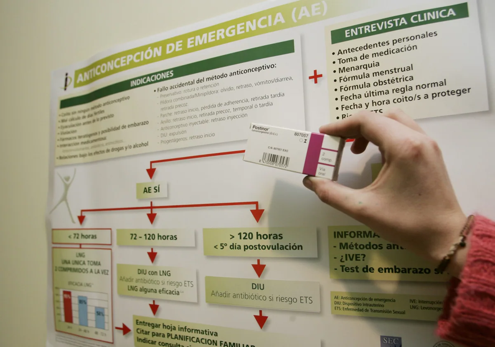

Noticias Políticas
El Supremo reabre la guerra de Hacienda
El magnate español del acero tendrá que volver a pasar por el banquillo de los acusados. El Tribunal Supremo ha anulado una de las dos absoluciones del empresario José María Aristrain por el fraude fiscal masivo que le atribuyen tanto Hacienda como la Fiscalía y ha ordenado que vuelva a ser juzgado por los tribunales madrileños, una causa en la que se enfrentó a penas de hasta 60 años de cárcel por un fraude de más de 200 millones de euros, considerado el mayor de España en haber sido llevado a juicio.
El PP congela los recursos por la amnistía
“Tras la publicación de la amnistía, el señor Sánchez le resulta cada vez más inútil al independentismo”. Así marcó este martes el líder del PP, Alberto Núñez Feijóo, ante sus barones la estrategia que seguirá su partido en las semanas que quedan hasta que termine el curso político. La dirección nacional y los barones autonómicos, que habían competido por liderar titulares contra la amnistía, echan ahora el freno a los anunciados recursos ante el Tribunal Constitucional. El nuevo objetivo: desbaratar la endeble mayoría que sustenta al Gobierno con leyes apoyadas por las derechas independentistas.
El Gobierno de Ayuso recurrirá
La presidenta de la Comunidad de Madrid, Isabel Díaz Ayuso, ha insistido hoy en que la Comunidad de Madrid recurrirá la ley de amnistía ante el Tribunal Constitucional. El Ejecutivo de Ayuso “solicitó un informe a los servicios jurídicos y dicho informe avala la interposición de este recurso contra esta infamia”, ha dicho la líder regional. El pleito se formalizará en los próximos tres meses.
El juez acepta ceder a la Fiscalía Europea parte de su investigación a Begoña Gómez
El juez Juan Carlos Peinado ha aceptado ceder una parte de la investigación que desarrolla contra Begoña Gómez a la Fiscalía europea después de que este organismo se lo reclamara por tratarse del destino final de fondos procedentes de la Unión Europea. De la providencia de un párrafo dictada se entiende que Peinado considera que sigue habiendo hechos que investigar pese a que la Audiencia Provincial de Madrid, su instancia superior, delimitó el procedimiento a las adjudicaciones a las empresas de Juan Carlos Barrabés, justamente lo que debe ser entregado a la Fiscalía europea.

Una jueza de Sevilla pide
ULa jueza del Juzgado de Instrucción 18 de Sevilla, María José Moreno Díaz, ha pedido a la Policía Nacional que localice a Vito Quiles, jefe de prensa del eurodiputado electo Alvise Pérez. Tal y como recoge eldiario.es, aunque el auto recogía en un primer momento la detención de Quiles, se debe a un error que, según fuentes judiciales, ya se está subsanando.
Noticias Sociales
Los MIR temen las vacaciones
Los MIR temen que se les utilice para cubrir las vacaciones ante el déficit de médicos Los sindicatos vigilarán que no se traslade a los residentes de centro solo por necesidades de personal Sanidad fija que los MIR de último año podrán pasar solos la consulta si tienen cerca a otro médico al que preguntar dudas
Europa se arma con vacunas contra la gripe aviar
El mundo se enfrenta al peor episodio de gripe aviar de las últimas dos décadas. El virus ha llegado a todos los rincones del planeta y se ha convertido en una amenaza para todos los mamíferos, incluidos los humanos. Si su presencia no disminuye en la naturaleza, es solo cuestión de tiempo que acabe transmitiéndose de forma sostenida entre personas, vaticinan los expertos. Y cuando esto ocurra podríamos enfrentarnos a una nueva pandemia con un virus respiratorio que se transmite como el coronavirus o cualquier gripe.
Alemania limita el consumo de cannabis
Un conductor de 22 años que arrolló a un ciclista en Ludwigshafen será el primer multado por conducir bajo los efectos del cannabis. El evidente olor en el coche alertó a la policía, que pidió una confirmación a través de un análisis de sangre. Tras la legalización del consumo recreativo del cannabis, que entró en vigor el 1 de abril, los accidentes por esta causa se han multiplicado y los legisladores alemanes se han visto obligados a seguir trabajando.
La primera y más urgente reforma que han debido abordar afecta a las leyes de trafico. El Bundestag ha aprobado una nueva ley de la coalición semáforo que fija un límite del ingrediente activo THC en el organismo durante la conducción y establece multas por las consecuentes infracciones. Basada en el límite de 0,5 por mil de alcohol en sangre, Alemania ha establecido un límite legal de 3,5 nanogramos de THC, bajo amenaza de multa de 500 euros y la una prohibición de conducir durante un mes.
La nueva Selectividad
“Es la primera vez que se incluyen criterios comunes y homogéneos para todos los territorios tanto en el formato de las pruebas como a la hora de evaluar dichas pruebas”, celebraba Pilar Alegría, la ministra de Educación, en rueda de prensa posterior al Consejo de Ministros, donde recordaba que es “imposible” un modelo “único” de selectividad para toda España como plantea el PP. En su intervención, la ministra defendía la nueva prueba de acceso cuente con “criterios comunes y homogéneos”, que sean “idénticos” para la evaluación “desde el punto de vista de la sintaxis y de ortografía”, teniendo en cuenta que las “competencias que tienen las comunidades autónomas y las universidades”.
La PAU mantiene la mayoría de características de la anterior EBAU, pero se añaden algunas novedades con una estructura, unas características básicas y unos criterios de corrección mínimos comunes para todo el territorio.
Aragón y La Rioja
La Rioja y Aragón son las comunidades autónomas que mejor atención anticoncepción ofrecen a la población, mientras que Castilla-La Mancha, Castilla y León y País Vasco son las que deben mejorar este apartado, según un informe elaborado por Sedra-Federación de Planificación Familiar.
Según recoge el documento, cada comunidad autónoma otorga a la salud sexual, y en concreto a la anticoncepción, «una importancia muy desigual, y aplica una diversidad de modelos de gestión que producen inequidades que sufren las mujeres«. Por lo que la situación de la atención a la anticoncepción en España puede definirse «como heterogénea e inequitativa».

Desigualdades en la EBAU
Los estudiantes de segundo de bachillerato están inmersos en los exámenes de acceso a la universidad: algunos ya esperan las notas, como los de La Rioja; otros, como en Madrid, están en plenos exámenes; mientras, en Cataluña y Andalucía no empezarán hasta el 14. Sobre las pruebas de este año, que llegan meses antes de que la LOMLOE llegue a los currículos de toda España, planean una nueva y una vieja polémica: la injusticia que para muchos alumnos supone que se hayan mantenido las normas, más laxas, de los exámenes covid, y la desigualdad que supone que no exista un examen único en toda España.
Noticias Culturales
Practicamente Mágia 2
Las actrices podrían volver a interpretar a las hermanas Owens en la secuela que prepara Warner Bros. Casi tres décadas, 26 años para ser exactos, han tenido que esperar los fans de Prácticamente magia (1998) para tener noticias de las hermanas Owens en la gran pantalla. Y es que el 10 de junio Warner Bros confirmó la secuela directa de la película que adapta la saga de novelas de Alice Hoffman. ¡Y lo hizo con un meme!
Borja Jimenez
Borja Jiménez, el suceso de San Isidro: ‘Para mí, lo más importante, es que han sido dos Puertas Grandes muy contundentes, con todo el mundo de acuerdo y eso es muy difícil en Madrid’. legaba a la feria como debutante, aunque con el aval casi de ser un torero de Madrid. El primer San Isidro de Borja Jiménez. Aunque con una apuesta para posicionarse en lo más alto del toreo. Tres tardes: Santiago Domecq, Victorino Martín y Victoriano del Río. Un sinfín de emociones y sensaciones que acabaron en el umbral de la Puerta Grande. Con una polémica más centrada en el palco por negar la segunda oreja, que por su rotunda tarde.
Cultura abre el proceso
Cultura abre el proceso para que sus dueños reclamen 5.126 obras incautadas en la guerra. «A partir de mañana, las personas que localicen un bien de su propiedad, lo podrán reclamar y lo estudiaremos caso por caso», ha explicado el ministro de Cultura, Ernest Urtasun, que se ha mostrado «muy orgulloso» de ser el primer Ministerio que cumple con este requerimiento de inventario que establece la Ley de Memoria Democrática. Urtasun da comienzo a esta medida casi ocho meses después de tomar posesión el pasado noviembre. Ha justificado el tiempo que se ha tardado en hacerlo en la necesidad de contar con un informe de la abogacía del Estado que diera luz verde a la posibilidad de hacer las devoluciones.
Rihanna negó su retiro de la música y confirmó la llegada de su próximo disco
La cantante de Barbados asegura que revisará su discografía con su "nueva perspectiva" y decidirá qué temas merecen quedarse en su vida. Hace ya ocho años que Rihanna no sorprende con un nuevo disco. Desde Anti, en 2016, no había vuelto a lanzar un LP, pero ahora ha anunciado que está lista para volver al estudio y planea volver a escuchar la música en la que ha trabajado durante los últimos años y decidir si algo de eso todavía es relevante o interesante para ella. "Creo que la música, para mí, es un nuevo descubrimiento. Estoy redescubriendo cosas."Sí, estoy volviendo a empezar. Pero no quiero descuidar las canciones que tengo, así que en realidad mi idea es volver atrás y escucharlo todo con nuevos oídos.
Muere Françoise Hardy
Se apaga una de las voces de la chanson francesa de los años 60. Françoise Hardy, que llevaba años enferma e incluso había pedido a Emmanuel Macron que legalizara la eutanasia para poder tener una muerte digna, ha fallecido este 11 de junio, a los 80 años. Lo ha anunciado su hijo, Thomas Dutronc, en Instagram. Hardy ha sido, junto con Brigitte Bardot o Jane Birkin, fallecida hace un año, uno de los grandes iconos de los años 60 en Francia y una de las cantantes más célebres dentro y fuera del país. Tenía una treintena de discos, fue sido musa y artista. Posó para diseñadores como Yves Saint Laurent o Paco Rabanne, fue retratada por fotógrafos de la talla de William Klein y Richard Avedon.
Subastan el libro más antiguo
Subastan por 3,9 millones de dólares en Londres el libro más antiguo de la historia. El códice Crosby-Schøyen, uno de los libros más antiguos del mundo escrito en egipcio copto, se subastó este martes en la casa Christie's de Londres por 3,06 millones de libras (3,63 millones de euros o 3,9 millones de dólares), en torno a su precio máximo estimado. Una colección de textos litúrgicos cristianos escritos en copto, presentada por Christie's como "uno de los libros más antiguos que existen". Este manuscrito subastado en Londres, bajo el nombre de Códice Crosby-Schøyen, es también el libro más antiguo perteneciente a una colección privada. Compuesto por 51 hojas, de las 68 que constituían el libro original, cada página contiene entre 11 y 18 líneas escritas a dos columnas, por un solo copista. El manuscrito fue descubierto y adquirido a principios de los años 1950 en Egipto por un coleccionista suizo, Martin Bodmer, antes de cambiar de manos varias veces durante las décadas siguientes.
Noticias Deportivas
Fátima Diame emerge donde antes se hundía.
Larissa Iachipino, la italiana que ya se ha asomado a los siete metros (6,97m) con solo 21 años, se metió de un salto en la final de longitud. Como la portuguesa Agate de Sousa. Y como la alemana Malaika Mihambo, campeona, olímpica, mundial y europea, la que lo logró con más suficiencia, un vuelo relajado hasta los 7,03 metros a pesar de tener viento en contra (-1.3m/s), la mejor marca europea del año y la segunda del mundo.

Los relevos lideran la velocidad española
Tres de los cuatro relevos españoles se clasificaron para la final del miércoles, y dos de ellos eran de mujeres, el 4x100 (43s, séptimo tiempo de las ocho finalistas) y el 4x400 (cuarto). A ellas se suma el largo de hombres (cuarto). El 4x100, integrado por los atletas más jóvenes, y sin el más rápido de todos, Guillem Crespí (sexto en la final de 100m con 10,18s), lesionado, es un grupo en proceso de compenetración en las manos sabias del jefe de todo esto, Toni Puig, falló en los cambios de testigo y quedó eliminado.

Berlín, sede del debut de La Roja
Los más de diez mil aficionados españoles que han acudido a Berlín para apoyar a la Selección en su estreno en la Eurocopa frente a Croacia se han hecho sentir en los prolegómenos al partido.
En las inmediaciones de la Puerta de Brandenburgo, centro neurálgico de la capital germana y sede de la Zona Aficionados instalada en la ciudad, una gran colonia de hinchas ataviados con la rojigualda expanden sus gritos de aliento al combinado nacional, ante la atenta mirada de los incondicionales croatas.

Jordan Díaz, campeón de Europa
El español Jordan Alejandro Díaz se llevó el oro en triple salto del Europeo, este martes en Roma, batiendo el récord de su país y estableciendo la tercera mejor marca mundial, con 18,18 metros.
Sólo el británico Jonathan Edwards (18,29 m) y el estadounidense Christian Taylor (18,21 m) habían saltado más lejos en el pasado que el atleta español de 23 años.
"Fue una competición de ensueño, no soy consciente de lo que he hecho, no he visto nada, pero sé que ha sido algo increíble", confesaba Jordan Díaz al término de su éxito. "Ver a Pichardo saltar 18 metros me motivó a saltar aún más lejos, porque nadie viene a estos campeonatos para terminar segundo o tercero"./p>
Fichaje de Dimitrievski
El Valencia CF ha hecho oficial a través de un comunicado el fichaje de Stole Dimitrievski hasta junio de 2026. El guardameta macedonio reforzará la portería de Mestalla y se incorporará al trabajo el próximo 5 de julio, donde será presentado oficialmente como nuevo jugador valencianista.

Expedición de la Roja
Entre relojes cuco y pasteles Selva Negra, rodeado de más clásica vegetación alemana, verde y húmeda, que avisa la llegada del verano, se cuela un toro rojo de cerámica custodiado por dos banderas españolas. Su precio, 1.500 euros, un regalo homenaje de Donaueschingen para agasajar a la selección española. Allí, en el complejo Der Öschberghof, descansará la Roja durante su estadía en la Eurocopa de Alemania.